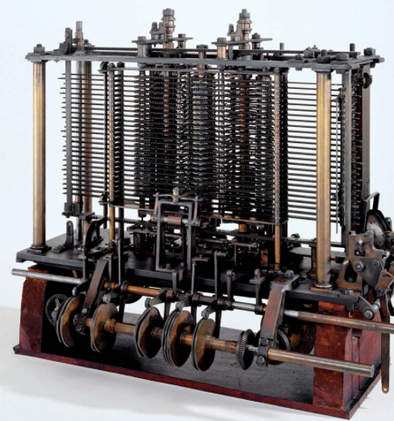

Ada Lovelace was born on the 10th of December, 1815, to Lord Byron and Lady Byron. Lord Byron was a celebrated poet who was involved in strange behaviours, like drinking from a human skull. Soon after on the 16th of January, 1816, Lord Byron ordered Lady Byron to separate from him and leave for her parents home, taking Ada with her. Lord Byron didn’t fight for custody of Ada, however he asked his sister to keep him up to date on how Ada was doing. After signing the deed of separation on the 25th of April, Ada and her mother decided to move up to England. When Ada was eight, her father died while fighting in a war of independence in Greece. Even though her father didn’t stay around for long Ada stayed interested in her father and her poetry throughout her whole life. Ada’s mother forced Ada into an education in math and science, to stop her from developing her fathers tendency’s. Even though Ada was with her mother most of her life, she didn’t have the closest relationship with her, instead being put in the care of her maternal grandmother Judith Hon most of her time. Her mother was supposedly very overprotective of her, even sending close friends to watch over her daughter during her teenage years. That wasn’t the only strange thing her mother did to protect her, since she strangely forced Ada to lie down for long periods of time to develop self control. Lovelace was said to frequently be ill with headaches, and eventually catching measles, which temporarily paralyzed her. Ada eventually managed to walk again with the help of crutches, but after the illness she was more advanced than ever in her understanding of math and sciences. When Ada was 12 years old she decided she wanted to fly, she wanted to do this by creating wings for herself using steam to fly like a bird.
The family
Ada was introduced to famous mathematician Charles Babbage in 1833 who became her mentor and friend after she impressed him with her intellect. He was showing the difference engine at his party where nobody truly understood it but Ada, her interest in the machine impressed him. However soon after Babbage's difference engine would never be finished, after a disagreement with his engineer caused his engineer to leave with the plans, but soon after in 1834 Babbage came up with the analytical engine. The analytical engine is considered to be the world first programmable, general purpose computer. After she saw Babbage's machine she went on a trip around northern England to see the most technologically advanced machine of the time, the Jacquard loom. Ada was fascinated by how the machine worked to create all these patterns, “The analytical engine weaves algebraic patterns just as the Jacquard weaves flowers and leaves”(Ada Lovelace). Ada soon got married to William King and had 3 children, however she swore that that would never get in the way of her and the analytical engine. Military engineer and future Italian prime minister Luigi Menabrea wrote an article on the analytical engine, but the only problem was that it was written in french. Ada chose to be the one to translate the article, adding in her own thoughts on the analytical engine as well. When Ada finished translating the article was 3 times as long due to what she added, she then published her translation into Scientific Memoirs, a journal published in 1843. In section G, Ada wrote about how the engine could be programmed with code to calculate the Bernoulli numbers, this was later credited as one of the reasons why she was the first computer programmer. Since this was an algorithm that would be run by a machine, which is why it’s the first computer program. She created the concepts of loops and gave her thoughts on artificial intelligence in the paper, “The Analytical Engine has no pretentious whatsoever to originate anything. It can do whatever we know how to order it to perform. It can follow analysis; but it has no power of anticipating any analytical relations or truths”(Ada Lovelace).
Babbage's Machine
In 1851, Ada began gambling on horses, possibly to raise money for the analytical engine. Ada tried to develop a mathematical equation to win a bet, but she lost, ending up owning half a million dollars. She later died at the young age of 36 in 1852 of uterine cancer. Before she died she asked her husband to bury her next to her father, Lord Byron.
Ada’s ended up being undiscovered for around 100 years, scientist Alan Turing was the one who ended up discovering her research, his machine the bombe was greatly influenced by her work. Ada and Babbage both paved the way for Turing who is considered the father of artificial intelligence and theoretical computer science. Ada’s work was later published in B.V Bowden’s book Faster Than Thought, in 1953. Later during the 1970’s, the U.S. Department of Defense developed a programming language named after Ada named “Ada”, Ada is still a programming language used today. On the second Tuesday of October Ada Lovelace day is celebrated, which is aimed to recognise the achievements of women in (STEM) and get more women to join the program. Ada in the end paved the way for computing technology we have today and is in the end likely the first computer programmer.